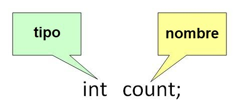
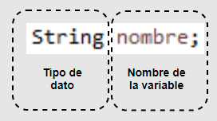

¿Qué es Java?
Java es un lenguaje de programación y una plataforma informática comercializada por primera vez en 1995 por Sun Microsystems. Java es una tecnología que se usa para el desarrollo de aplicaciones que convierten a la Web en un elemento más interesante y útil. Java no es lo mismo que javascript, que se trata de una tecnología sencilla que se usa para crear páginas web y solamente se ejecuta en el explorador.
Java le permite jugar, cargar fotografías, chatear en línea, realizar visitas virtuales y utilizar servicios como, por ejemplo, cursos en línea, servicios bancarios en línea y mapas interactivos. Si no dispone de Java, muchas aplicaciones y sitios web no funcionarán.
Por defecto, Java le notificará inmediatamente que hay nuevas actualizaciones listas para instalarse. Si desea estar al día y mantener la seguridad de su computadora, es importante que acepte e instale las actualizaciones. Si recibe una notificación de actualización de Java en su computadora Windows y no recuerda haberla descargado o instalado, lo más probable es que Java estuviera ya instalado en la nueva computadora.
Una variable es el nombre dado a una ubicación de memoria. Es la unidad básica de almacenamiento en un programa. El valor almacenado en una variable se puede cambiar durante la ejecución del programa. En Java, todas las variables deben declararse antes de que puedan ser utilizadas.
 Una librería Java se puede entender como un conjunto de clases que facilitan operaciones y tareas ofreciendo al programador funcionalidad ya implementada y lista para ser usada través de una Interfaz de Programación de Aplicaciones, comúnmente abreviada como API (por el anglicismo Application Programming Interfac